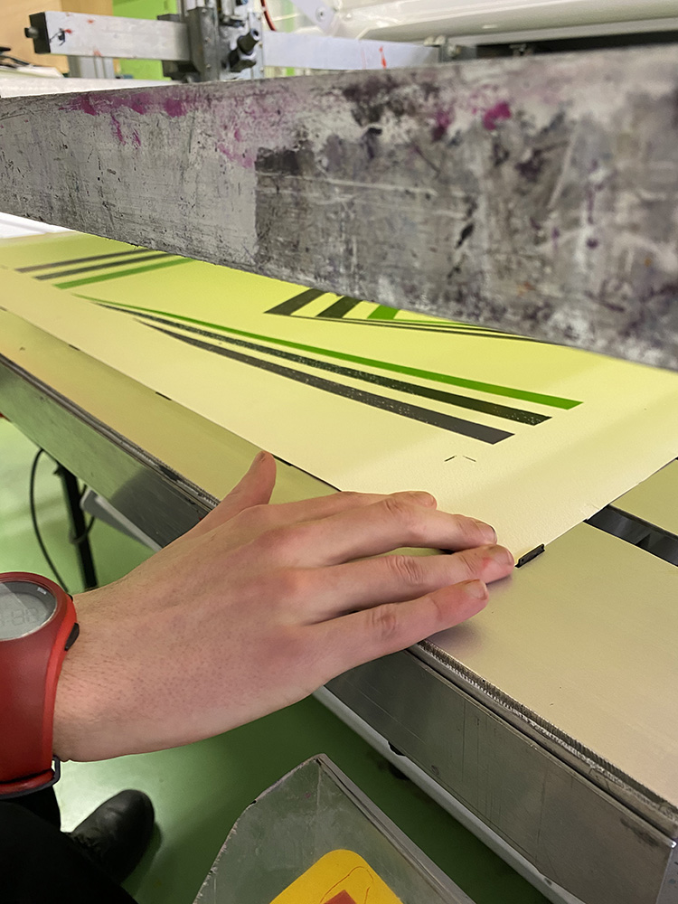

-
Chef d'œuvre CTSER 2020/2021
Réglages de la forme

Recherche de teinte

Sortie des films

Colorisation de la forme

Création du visuel

Les racles sont prêtes

Vérification des typons

On se projette sur le support
- 
La feuille est bien margée

Calage sur Silair

L'écran est prêt
L'op art dans toute sa splandeur

Contrôle en cours de tirage
Impression en cours...

Préparation des encres

Un peu de couleur
On mélange

Calage sur machine manuelle

On vérifie les films

Le RIP est lancé
Ça séche !
Et on dégrave
Insolation de notre écran
Les encres
La réception à la fin du tunnel U.V

Une impression parfaite